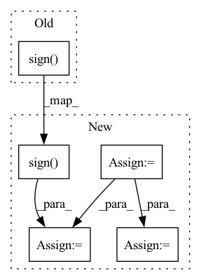

Pattern ID :19682

Before Change
p.data = (
-1
/ (group["l2"] + (group["beta"] + n.sqrt()) / group["alpha"])
* (z - group["l1"] * z.sign())
)
p.data[z.abs() < group["l1"]] = 0
return loss
After Change
z, n = state["z"], state["n"]
sigma = -n.sqrt()
n.add_(grad ** 2)
denom = n.sqrt()
sigma += denom
sigma /= group["lr"]
z.add_(grad - sigma * p.data)
// update weight
denom += group["beta"]
denom /= group["lr"]
denom += group["weight_decay"]
d = z.sign() * torch.maximum(
z.abs() - group["l1"],
torch.zeros_like(z)
)
p.data = -d / denom
return loss
In pattern: SUPERPATTERN
Frequency: 3
Non-data size: 5
Instances
Fragment ID: 64022822
Project Name: ryantd/veloce
Commit Name: 38281d6b3d7be0182da4d9a2f3a3b0a4ad2897f1
Time: 2022-02-16
Author: xiaoyu.zhai@hotmail.com
File Name: phetware/optimizer/ftrl.py
M Class Name: FTRL
N Class Name: FTRL
M Method Name: step(2)
N Method Name: step(2)
M Parent Class: Optimizer
N Parent Class: Optimizer
M File Name: phetware/optimizer/ftrl.py
N File Name: phetware/optimizer/ftrl.py
M Start Line: 22
M End Line: 41
N Start Line: 21
N End Line: 48
'>
Before Change
// Jacobian product for the gradient w.r.t. X
// See https://github.com/lyprince/sdtw_pytorch/blob/e509ef56374c83817bcf303bff102ca9636a1efe/sdtw.py//L222
dR_X = E.matmul(torch.ones(B, M, H, dtype=dtype, device=dev)) * torch.sign(X)
return dR_X, None, None, None, None
// ----------------------------------------------------------------------------------------------------------------------
After Change
E = torch.zeros((B, N + 2, M + 2), dtype=dtype, device=dev)
E[:, -1, -1] = 1
G = torch.zeros((B, N + 2, M + 2), dtype=dtype, device=dev)
G[:, -1, -1] = 1
compute_softdtw_backward_cuda[B, threads_per_block](cuda.as_cuda_array(D_),
cuda.as_cuda_array(R),
1.0 / gamma.item(), warp.item(), bandwidth.item(), N, M, n_passes,
cuda.as_cuda_array(E), cuda.as_cuda_array(G))
G = G[:, 1:N + 1, 1:M + 1] // dR_D
tmp_G = G*torch.sign(raw_D)
dR_X = tmp_G.matmul(torch.ones(B, M, H, dtype=dtype, device=dev))
return grad_output.view(-1, 1, 1).expand_as(dR_X) * dR_X, None, None, None, None, None
'>
Fragment ID: 64022826
Project Name: keonlee9420/parallel-tacotron2
Commit Name: bd75c0f173712ff648502ab90094facda79aa359
Time: 2021-07-25
Author: keonlee9420@gmail.com
File Name: model/soft_dtw_cuda.py
M Class Name: _SoftDTWCUDA
N Class Name: _SoftDTWCUDA
M Method Name: backward(2)
N Method Name: backward(2)
M Parent Class: Function
N Parent Class: Function
M File Name: model/soft_dtw_cuda.py
N File Name: model/soft_dtw_cuda.py
M Start Line: 173
M End Line: 186
N Start Line: 130
N End Line: 161
'>
Before Change
wavs[:, i] = 2 * wav.item() / (self.quant_dim - 1.0) - 1.0
mu = self.quant_dim - 1
wavs = torch.sign(wavs) / mu * ((1 + mu) ** torch.abs(wavs) - 1)
return wavs
After Change
batch_size = len(mels)
device = mels[0].device
mel_lens = [len(mel) for mel in mels]
wav_lens = [mel_len * self.hop_len for mel_len in mel_lens]
max_mel_len = max(mel_lens)
mel_embs = []
for mel in mels:
mel = mel.unsqueeze(0)
mel_emb, _ = self.mel_rnn(mel)
mel_emb = mel_emb.squeeze(0)
mel_embs.append(mel_emb)
mel_embs = pad_sequence(
mel_embs, batch_first=True, padding_value=float(self.quant_dim // 2)
)
mel_embs = mel_embs.transpose(1, 2)
conditions = F.interpolate(mel_embs, scale_factor=float(self.hop_len))
conditions = conditions.transpose(1, 2)
hid = torch.zeros(1, batch_size, self.wav_rnn_dim, device=device)
wav = torch.full(
(batch_size,), self.quant_dim // 2, dtype=torch.long, device=device,
)
wavs = torch.empty(
batch_size, max_mel_len * self.hop_len, dtype=torch.long, device=device,
)
for i, condition in enumerate(torch.unbind(conditions, dim=1)):
wav_emb = self.embedding(wav)
_, hid = self.wav_rnn(
torch.cat((wav_emb, condition), dim=1).unsqueeze(1), hid
)
logit = self.affine(hid.squeeze(0))
posterior = F.softmax(logit, dim=1)
wav = torch.multinomial(posterior, 1).squeeze(1)
wavs[:, i] = 2 * wav / (self.quant_dim - 1.0) - 1.0
mu = self.quant_dim - 1
wavs = torch.true_divide(torch.sign(wavs), mu) * (
(1 + mu) ** torch.abs(wavs) - 1
)
wavs = [
wav[:length] for wav, length in zip(torch.unbind(wavs, dim=0), wav_lens)
]
'>
Fragment ID: 64022814
Project Name: yistlin/universal-vocoder
Commit Name: a2f043170a0335459db6b45b7d8dc692db9a00f5
Time: 2020-10-06
Author: yishen992@gmail.com
File Name: models/universal_vocoder.py
M Class Name: UniversalVocoder
N Class Name: UniversalVocoder
M Method Name: generate(2)
N Method Name: generate(2)
M Parent Class: nn.Module
N Parent Class: nn.Module
M File Name: models/universal_vocoder.py
N File Name: models/universal_vocoder.py
M Start Line: 58
M End Line: 88
N Start Line: 63
N End Line: 120